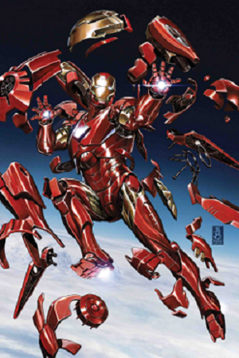

Marvel Heroes Video GAME
- Iron Man
- Captain America
- Deadpool
- Wolverine
Marvel Heroes, also known as Marvel Heroes 2015, Marvel Heroes 2016 and Marvel Heroes Omega, was a free-to-play massively multiplayer online action role-playing video game developed by Gazillion Entertainment and Secret Identity Studios. Characters such as Iron Man, Captain America, Deadpool, and Wolverine were playable characters that could be unlocked in the game.
Iron Man

Iron Man is a superhero appearing in American comic books published by Marvel Comics. Co-created by writer and editor Stan Lee, developed by scripter Larry Lieber, and designed by artists Don Heck and Jack Kirby, the character first appeared in Tales of Suspense #39 in 1962 and received his own title with Iron Man #1 in 1968.
Captain America

Captain America is a superhero created by Joe Simon and Jack Kirby who appears in American comic books published by Marvel Comics. The character first appeared in Captain America Comics #1, published on December 20, 1940, by Timely Publications, a corporate predecessor to Marvel.
Deadpool

Iron Man is a superhero appearing in American comic books published by Marvel Comics. Co-created by writer and editor Stan Lee, developed by scripter Larry Lieber, and designed by artists Don Heck and Jack Kirby, the character first appeared in Tales of Suspense #39 in 1962 and received his own title with Iron Man #1 in 1968.
Wolverine

Wolverine is a superhero appearing in American comic books published by Marvel Comics. The character first appeared in the comic book The Incredible Hulk #180 and is best known as a member of the superhero team the X-Men. Wolverine is the alias of James Howlett also known as Logan.